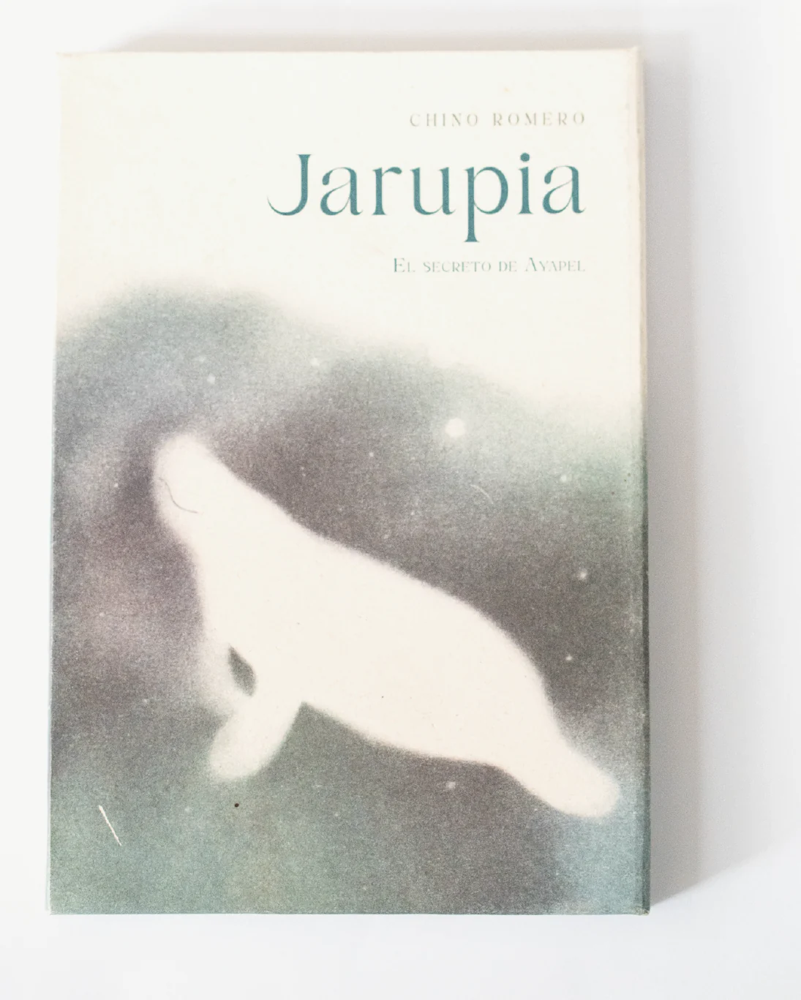
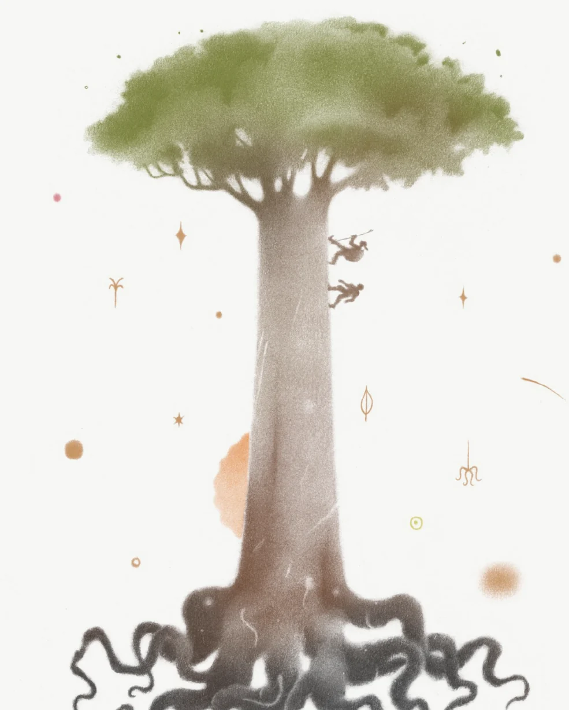
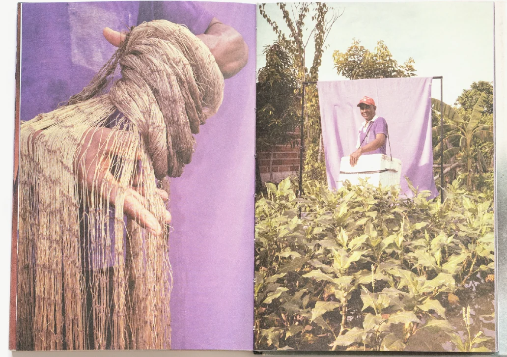
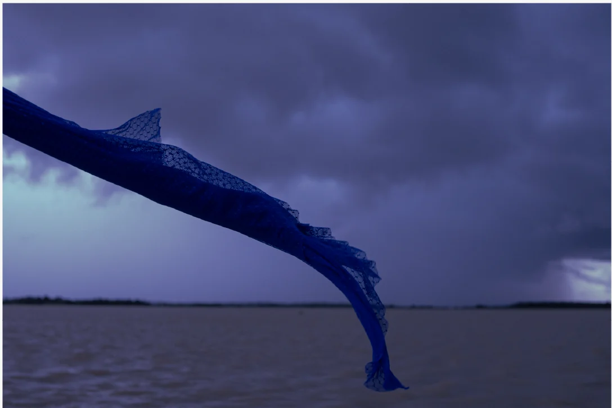
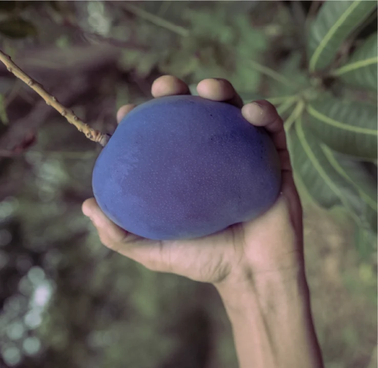
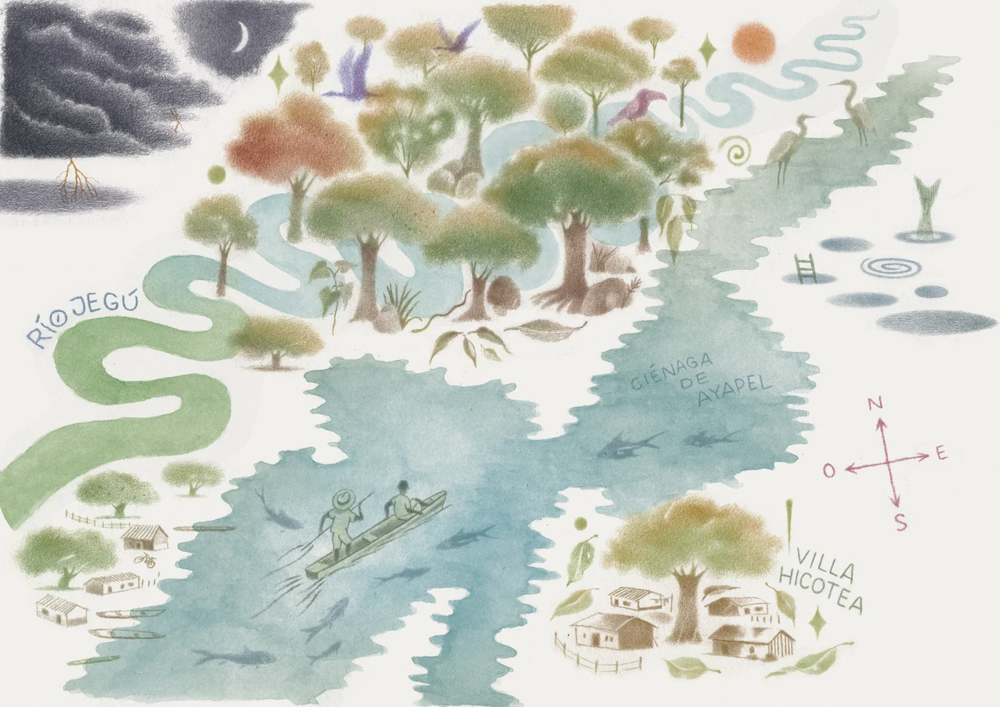
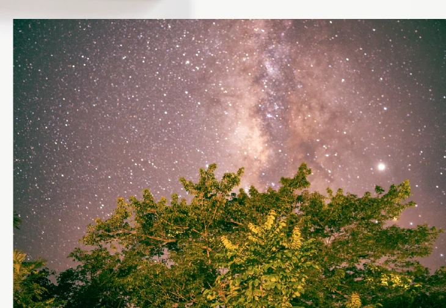
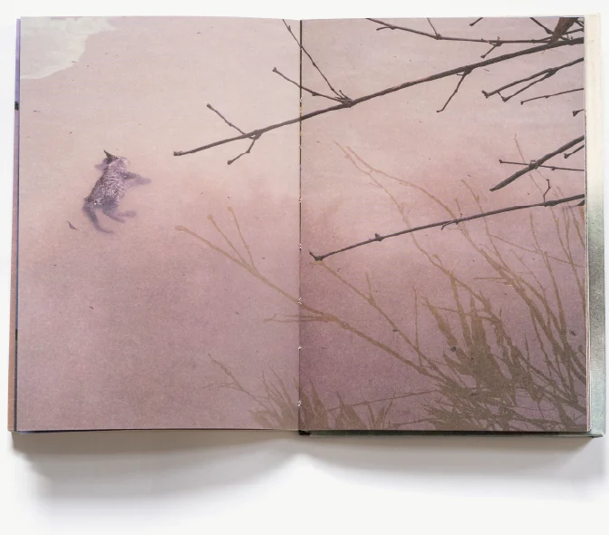
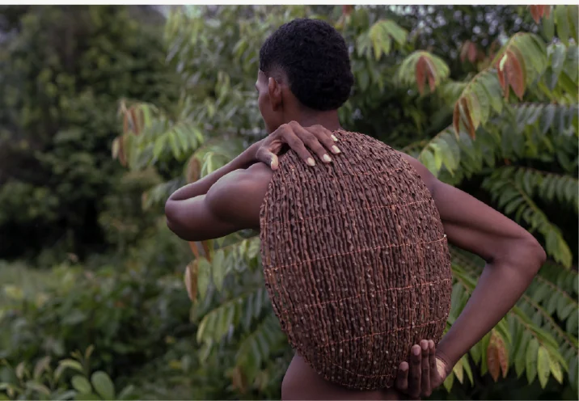

Chino Romero Hoyos
Es un fotolibro ficcionado que está inspirado en la ciénaga de Ayapel, las historias de los pescadores y pobladores alimentaron los mundos posibles de sus aguas.


Alejo creció en las orillas de la Ciénaga de Ayapel, bajo la sombra de la gran ceiba donde su abuela Ofelina le contaba historias de ríos que hablan y bosques que caminan. Historias que él, con el tiempo, aprendió a no creer.
Hasta el día en que un manatí llamado Obi lo arrastró a través de las puertas de otro mundo. Un lugar virgen, sin huella humana, donde el agua es transparente y los árboles llevan siglos transmitiendo lo que saben.
En La Jarupia, Alejo conoce a Tyron —el Hombre Hicotea— que le advierte: la única forma de regresar a casa es que Cachime lo autorice. Y eso no pasa desde hace muchos años.
"Ustedes creen que saben muchas cosas, pero en realidad olvidaron lo más básico y sin eso no se puede entender nada." — Tyron, el Hombre Hicotea







Chino Romero Hoyos
Fotógrafo y creativo colombiano cuya obra recorre el país con el propósito de narrar historias que revelan la conexión entre el territorio y las personas.
En sus viajes entendió que muchos colombianos desconocen su geografía física tanto como su geografía humana. Por eso, con su trabajo busca mostrar las múltiples identidades que se alejan de los paradigmas establecidos.
Su práctica fotográfica integra la cotidianidad de quienes habitan los territorios, las tradiciones que persisten, las transformaciones en curso y la belleza de lo ambiental y lo cultural — tratando que las imágenes sean un puente de empatía y reconocimiento.
Chino@lamagdalena.com.co